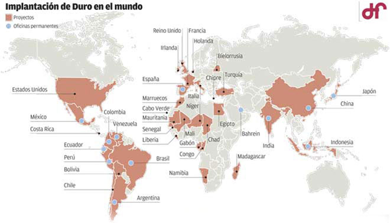
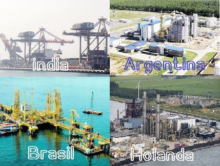
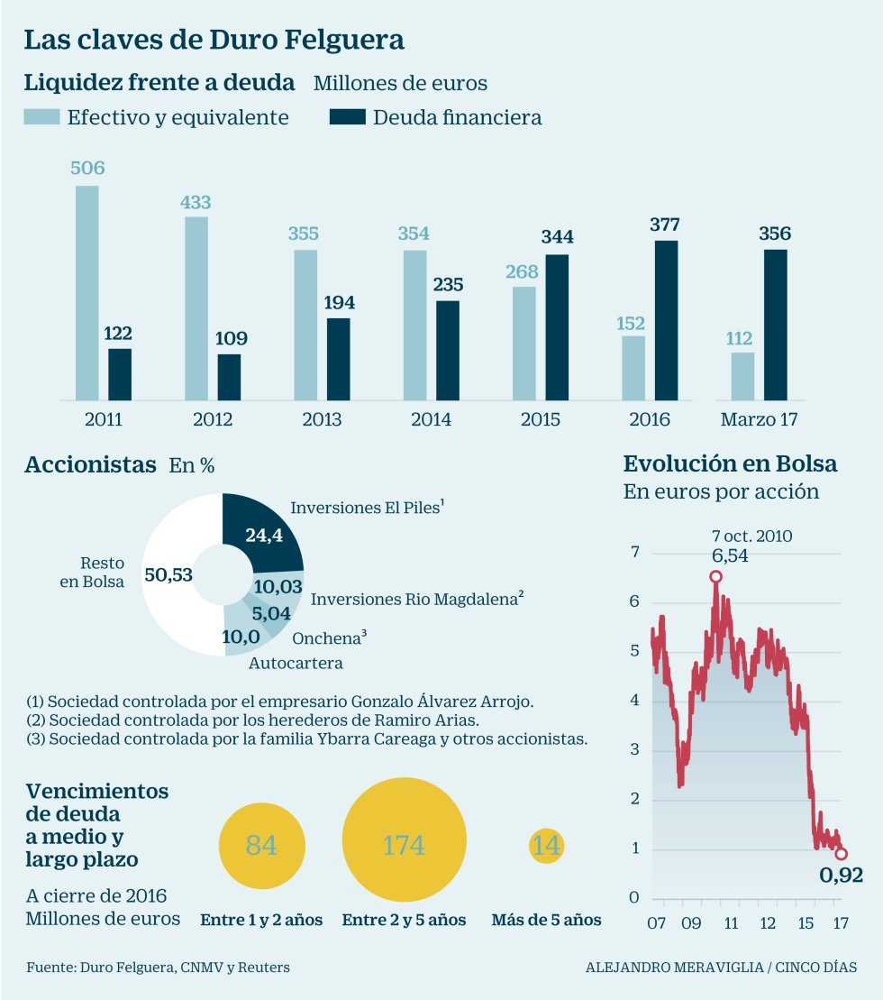

Duro Felguera es una de las empresas con más antigüedad de España. Comenzó en 1857 como una compañía siderúrgica y arrancaría la producción en 1860. Hasta pasados 100 años no comenzaría a exportar a otros países.
Duro Felguera sobreviría a la crisis de la posguerra gracias a un programa autárquico que era lo que se llevaba en los tiempos de Franco. Invertiría todos sus esfuerzos en crear sus propias máquinas y talleres, así como materiales provenientes de las minas y herramientas para el astillero y las fábricas.
Tras 20 años de engrosar sus recursos propios se dedicaría a vender y a exportar a otras empresas del mercado nacional. A partir de 1965 aumentaría su línea internacional y dejaría de ser una empresa únicamente manufacturera de materias primas. En este caso de los materiales principales de las cuencas mineras asturianas.
La apertura al exterior de Duro sería progresiva y llegaría a aportar más del 95% de contratos del total en 2010. En ese camino sufriría varias crisis como en 1992, cuando la primera guerra del golfo.
A partir de ese periodo tendría una presencia nacional muy fuerte y cada vez más estaría presente en otros países. Su principal competidor a nivel nacional sería la empresa vasca Babcock-Wilcox. Esta empresa presuntamente estaría recibiendo un trato especial por los gobiernos socialistas de los 80 y aún así no llegaría a ser tan fuerte como Duro Felguera. Aún dandose estos apoyos no conseguiría sobrevivir dos décadas después. Duro sin embargo aguantaría el tiron.
La diversificación de Duro Felguera a finales de los 80 sería bastante grande pero aún asi no conseguiría generar un gran EBDITA. El banco Central Hispano que era el mayor accionista de aquel entonces decidiría deshacerse de su posición en la empresa tras la crisis última del gobierno de Felipe Gonzalez, crisis internacional que coincidió con la primera guerra del Golfo.
A partir de la llegada del socio alemán, Metallgesellchaft Duro cambiaría de dinámica, pasando de ser fabricante de materiales o herramientas a ser el que se encargaría de entregar los proyectos "llave en mano". Esto sería parte de la evolución de muchas empresas en Europa, que viendo ya que otros países del mundo fabricaban más y barato dedicarían todo su esfuerzo para gestionar proyectos y finalizarlos.
Duro tenía mucha experiencia desde abajo y eso le daría una gran fuerza frente a otros competidores que se habían dedicado siempre a gestionar proyectos y a venderlos, pero que dependían siempre del "como" y el "que". Esta experiencia sería fruto del desarrollo de estructuras y maquinaria para realizar centrales y fábricas en España durante más de medio siglo. Gracias a esto pronto se expandiría a otros países teniendo presencia en los que se muestran en el siguiente mapa:

 En el año 2000 el accionariado cambiaría de nuevo, haciendo pie otros grupos inversores locales y Álvarez Arrojo aumentaría su capital en la empresa de manera significativa.
En el año 2000 el accionariado cambiaría de nuevo, haciendo pie otros grupos inversores locales y Álvarez Arrojo aumentaría su capital en la empresa de manera significativa.


En 2015 Andrés Giraldo se iría del grupo viendo lo que estaba por llegar. Este gestor sería el responsable y mucho de todo lo acontecido en los tres últimos años. Sería puesto desde el banco Santander donde se habría controlado completamente la evolución de la empresa.
Debido a la alta diversificación el riesgo de la empresa estaba ya muy supeditado a la situación económica en Sudámerica o en otros países. En Brasil en 2015 se viviría una crisis sin precedentes con una alta devaluación del Real Brasileño. Además otros países próximos como Venezuela empezaban a tener problemas.
Y es que ese año se gastó en tres meses un tercio del valor total de la empresa y los beneficios en el primer cuatrimestre disminuirían en un 50% con respecto al año anterior. Esto normalmente sucede cuando a una empresa llegan malos gestores y se dedican a intentar hacer el máximo beneficio en el menor tramo de tiempo posible, pidiendo préstamos para realizar proyectos o embarcándose a gastar pensando en beneficios de proyectos que todavía están sin empezar. Y esto es lo que habría hecho el famoso Giraldo en sus años anteriores y su equipo, dilapidar 100 años de la firma de una empresa. Responsable sería el presidente de haberlo nombrado, y de no haber tenido la suficiente cautela como su suegro, el creador de la gran Duro Felguera. Y es que la sucesión de la misma por su yerno habría sido la última de las opciones que hubiese tenido pero debido a su estado de salud en los últimos tiempos y a querer dejar la empresa en manos de la familia habría sido finalmente así.

En el gráfico de la derecha se muestra la evolución de la deuda comparada con el dinero efectivo de la compañía, viendo como en 2015 ya están al mismo nivel, comenzando a entrar en una zona peligrosa.
Así pues, lo peor estaba por llegar y debido a dejar buitres en el nido, el banco Santander se convertiría en uno de los principales acreedores de este grupo. Teniendo plena potestad para manejar la empresa a su antojo. Además contaría con toda la información interna del grupo para poder hacer y deshacer en bolsa si fuera necesario.
En 2016 pues, a pesar de tener encargos por un valor superior a 2000 millones la deuda comenzaría a acorralar a Duro Felguera y los bancos intentarían reestructurar esa deuda para poder ser pagada en un futuro. Los implicados en estos ajustes sería la mayoría del sector bancario español: Banco Santander, BBVA, CaixaBank, Popular, Banco Sabadell, Liberbank y Banco Cooperativo.
En 2017 la crisis estallaría, y es que al fuerte endeudamiento de la empresa se sumarían problemas como una denuncia por el cobro de sobornos a países como Venezuela en 2009 para la toma de contratos. Estos hechos del pasado fueron desenmascarados justo cuando más problemas tenía la compañía seguramente por alguien que había sido perjudicado por Duro o por intereses en que cayese aún más la cotización. Superando ya el 50% de perdidas ese año y según se ve el gráfico no presentando un futuro muy alagüeño. Y es que desde 2012 la situación financiera de la empresa habría ido cuesta abajo, siendo 2015 el año crítico donde todo cambiaría coincidente con la salida de Andres Giraldo.
Visto así ya en 2017 se vería que los bancos querían salvar sus muebles, forzando a la empresa a concurso de acreedores para recuperar en cierta medida sus prestamos. Sin embargo queda la duda de saber si entre esos bancos no habría algún responsable de haber dejado créditos sabiendo que no iban a ser pagados para poder quedarse la empresa en un futuro y es que los bancos han cedido quitas al banco pero a cambio han recibido mayor control sobre la empresa. La finalidad es perder el menor dinero posible recuperando parte de los préstamos con las obras que quedan por finalizar, y es ahí donde va la mayor parte del dinero que se refinancia. Con esto los bancos recuperan su dinero y además ganan una posición dentro de la empresa la cual sera controlada en un futuro por fondos y sociedades controladas por estos bancos.
Este 2018 habrá sido uno de los capítulos más negros de la historia de Duro Felguera. Desde los máximos de 2011 la capitalización de la empresa ha pasado de valer más de 500 millones a valer cerca de 50 millones. Una décima parte de lo que valía pasando de 6 euros a poco más de 50 céntimos.
La caída gorda ocurriría en 2015 retrocediendo un 75% de su valor. A partir de esa caída retrocedería otro 50%, para llegar a los 0.92 euros que marcaba el gráfico anterior, y de ahí una vuelta a mínimos. Actualmente cotiza a 1,2 céntimos de euro la acción. Visto con perspectiva del valor antiguo a unos 12 céntimos de euro de los antiguos accionistas. Esto supone otra dilución de casi el 90%. Visto así cualquier accionista que hace tan solo tres años tuviera 70.000 € en este valor hoy no le quedarían más de 1.000 €. Esta perdida abultada no ha sido para nada supervisada por los reguladores bursátiles ni por ningún auditor externo. No es de extrañar que cada día más fondos extranjeros eviten de invertir en empresas cotizadas españolas y el IBEX35 vaya camino del abismo.
En cualquier otro país europeo esto habría sido cortado mucho antes de que sucediera.
Tras el anuncio de la ampliación el Banco Santander a la cabeza intentaría sacar rédito al acuerdo de restructuración intentando encajar el mayor número de acciones a los minoristas. En este caso no le saldría bien la jugada y si bien un día llego a subir casi un 200% pasando las acciones de 6 céntimos a 20 céntimos en el día no sería ni más ni menos que minoristas intradía y el propio banco que tuvo que parar esa jugada especulativa porque no hubo casi gente que acudiera a esa ampliación. Tenía la mayoría de inversores el recuerdo de Abengoa, donde el banco lanzo la piedra y escondió la mano, comenzando como el valedor de la empresa y deshaciendo sus posiciones junto con el resto de bancos, vendiendo las acciones que les habían sido otorgadas al mejor precio, y quedándose las suficientes para tener la empresa controlada.
En este caso la mayoría de las acciones son de los bancos y no han conseguido que nadie quiera dar un duro por ellas, estando el valor en quiebra técnica y estando a expensas de la finalización de proyectos para ser liquidada la empresa. Cuando llegue el momento se presentará el concurso de acreedores y sus activos serán otorgados a los bancos en el mejor de los casos.
Todos esta ampliación de capital y restructuración de la deuda ha sido posible gracias a que las dos grandes familias históricas del accionariado de Duro Felguera como son inversiones Somio, con el 27%, (familia Arrojo) y Inversiones Rio Magdalena, 11% (familia Arias), no han acudido a la ampliación como condición de los bancos. Y es que como en Abengoa con los Benjumea, los bancos se toman la justicia por su mano y al final si no pagas lo que debes te quitan de en medio.
Una prueba más de lo hinchada que estaba la capitalización de la empresa previa a la ampliación se explica con la subida a 23 céntimos de la compañía que tras la ampliación podría llegar a casi 1.500 millones. Esto fue una mera estratagema de los bancos para intentar despojar a cualquier minorista. Una práctica que debería haber sido investigada desde la CNMV.
Justo antes de la ampliación la acción caería a mínimos de nuevo, pasando de 23 céntimos a 2 céntimos. Y es que dar a una empresa el valor por las acciones cuando había un 97% de nuevas acciones que estaban en forma de derecho es una práctica donde la palabra especulación se queda corta y donde entran otras palabras como fraude o robo.
Pero lo peor estaba aún por llegar porque tras esta nueva inyección de capital la empresa presentaría unos resultados desastrosos, presentando perdidas de más de 50 millones en un solo cuatrimestre. Recordemos que la empresa valía no más de 50 millones antes del desastre. Debido a la nueva medida de la CNMV propiciada por la BME el mínimo se barajaría por debajo del céntimo por acción.
Nada más ocurrir la medida la acción sufriría un nuevo desplome llegando hasta los 0,7 céntimos de € o dicho de otro modo, 0,007€.
Una capitalización de 30 millones de euros. Tras dejar la cotización en estos precios en las que nadie se atreve a justificar su valor ya que sabiendo que esta en quiebra técnica y que el valor es negativo, me hago las siguientes preguntas.
| ### | 2014 | 2015 | 2016 | 2017 | 2018 |
|---|---|---|---|---|---|
| Deuda/ Caja empresa | Deuda Total (M) | -175 | -209 | 170 | 252 | 85 |
| Beneficio/valor acción | |||||
| Capitalización(M) | 536 | 211 | 179 | 52,8 | 61[Tras Ak] |
| EBDITA (M) | 69 | 76 | 34 | -135 | 11 |
| Beneficio Neto (M) | - | -69 | -19 | -175 | -80 |
| Dividendo (M) | - | 1.152 | 1.152 | .. | .. |
Si analizamos el valor en el plano del largo plazo observamos como hay tres grandes momentos.
A partir de ahi los bancos jugarían con el valor intentando hacer un Abengoa en Duro Felguera sin tener mucho éxito. Y es que la cotización previo a la ampliación subiría de 0.02€ a 0.23 € representando una cotización equivalente a 1.500 millones. En Abengoa paso lo mismo y la CNMV no tomo cartas, pero nadie esperaría que 1 año después ocurriría lo mismo. Sin embargo Abengoa llegaría a valer virtualmente ese valor previo la dilución pero estamos hablando de una empresa con unas dimensiones 20 veces mayores de lo que es Duro Felguera por lo que podría tener cierto sentido. En este caso el único razonamiento posible es que los bancos actualmente tienen el control de la CNMV. El órgano regulador hace lo que ellos quieren que haga.
Del siguiente gráfico se puede sacar la siguiente conclusión. La cotización de Duro Felguera debería haber sido suspendida en Diciembre de 2015 y no haber reabierto hasta justo ahora mismo con la perdida del valor de la acción a los antiguos poseedores y dejando tiempo para posibles reclamaciones por negligencias.

© 2016 - All Rights Reserved - Diseñada por Sergio López Martínez
![[Valid RSS]](https://www.feedvalidator.org/images/valid-rss-rogers.png "Validate my RSS feed")